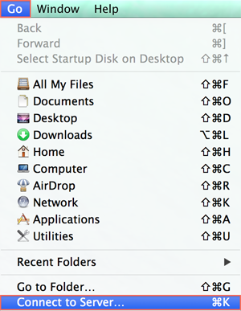

Visión general
NAS de Synology está diseñado para facilitar y acelerar el almacenamiento e intercambio de archivos en su red local, permitiéndole acceder directamente a los archivos y carpetas compartidas en el NAS de Synology sin necesidad de iniciar sesión en DSM cada vez. Por ejemplo, podrá acceder a los archivos de su NAS de Synology con Finder exactamente igual que en otros dispositivos de red.
Acceder a carpetas compartidas con Mac OS
- Abra Finder en su ordenador Mac.
- Busque la barra de menú de la parte superior de la pantalla.
- Haga clic en Ir y seleccione Conectarse al servidor. 
- Introduzca la dirección IP de su NAS de Synology, precedida por "afp://". Por ejemplo, "afp://192.168.59.121". Haga clic en Conectar para continuar.
- Introduzca el nombre de usuario y la contraseña de DSM. Su cuenta de usuario debe tener los privilegios de lectura/escritura adecuados para la carpeta compartida a la que desee acceder. Haga clic en Conectar para continuar.
- Por último, si los credenciales del nombre de usuario son correctos, verá su NAS de Synology en la sección Compartido de la ventana Finder. Haga doble clic en la carpeta compartida para explorar sus contenidos.

Servidores favoritos: Al pulsar el botón de signo más (+), se designan direcciones IP como servidores favoritos para su posterior uso. Además, puede hacer clic en el botón de reloj para ver una lista de los servidores a los que se ha conectado recientemente.